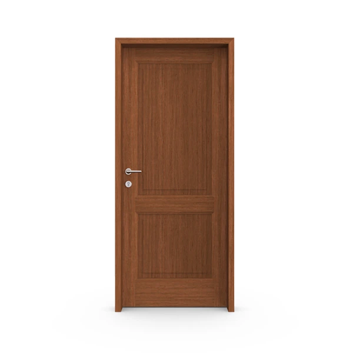
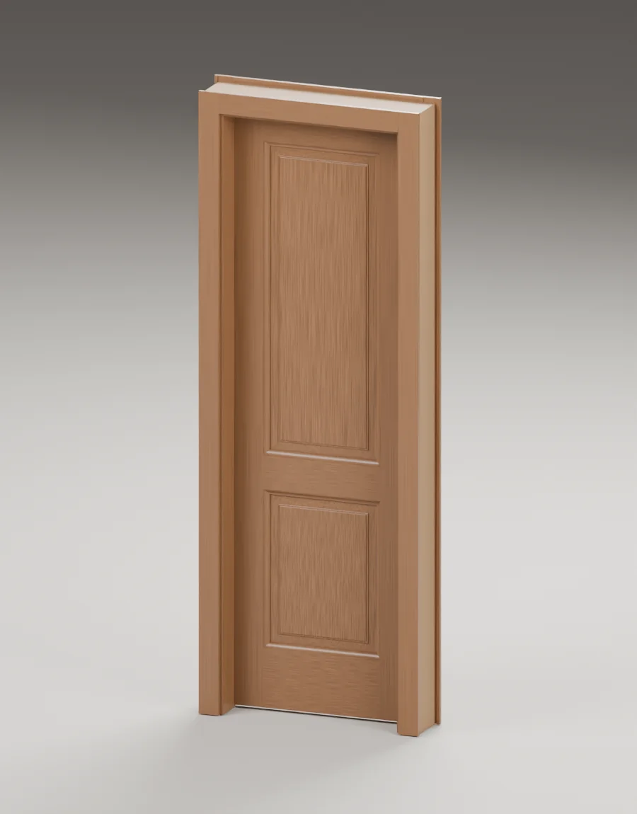

Puertas de interior / Diseño de tableros
Burdeos.
Tableros definidos. Una puerta con carácter.
Un diseño de tableros con opción de nogal macizo o terminación pintada. El relieve de la hoja dibuja luces y sombras en el ambiente.
Encontrá tu combinaciónLa hoja. El ambiente. El encuentro con la pared.
 La puerta como parte de la arquitectura.
La puerta como parte de la arquitectura.01 / Elegí el acabado
Un diseño.
Distintos caracteres.
El acabado cambia la presencia de la puerta. Explorá las opciones de la línea para tu ambiente.

Colores y veta de referencia. El marco y la apertura de las imágenes son ilustrativos; se eligen por separado.
Las muestras orientan la elección. El tono y la terminación se definen con el equipo comercial. El ambiente del encabezado es una referencia de diseño y no reproduce cada color.
Terminaciones de la línea
Madera maciza
Nogal, con recubrimiento poliuretánico al agua, sin teñir.
Pintados
Blanco, gris, negro, rosa y verde, con lacas al agua.
Los seis acabados se pueden explorar en el render y en el modelo 3D. El tono final se confirma con una muestra física.
El conjunto, en tres dimensiones
Burdeos,
desde cada ángulo.
Girá la puerta, mirá sus piezas y explorá la relación entre la hoja y el marco.

Activá una pieza para verla en el conjunto.
La vista previa es un render con hoja y marco del mismo acabado. Los cambios independientes se ven al activar el 3D.
Arrastrá horizontalmente para girar. Con mouse también podés variar la altura. Usá los botones para acercar; la rueda y el gesto vertical conservan el scroll. Con la vista enfocada: flechas para girar, +/− para zoom e Inicio para volver.
El 3D se prepara al llegar a esta sección.
Conjunto de referencia. La demostración representa una hoja simple Burdeos con marco y contramarco, con premarco opcional. No reproduce todas las aperturas ni todos los sistemas de la ficha.
Geometría de estudio. Los tableros de este modelo tienen 25 mm, incluso al visualizar nogal. La ficha vigente indica 42 mm para el tablero de madera maciza. Colores y vetas son orientativos.
La vista en nogal cambia el material de la superficie; conserva la geometría de estudio. Consultá la construcción de la versión maciza en los detalles técnicos.
Tu selección es distinta. El visor sigue mostrando hoja simple con marco y contramarco. La apertura y el sistema que elegiste en la ficha se conservan en tu consulta.
03 / Elegí el sistema
El detalle que
cambia el conjunto.
El marco define cómo se encuentra la hoja con la pared. Mirá su estructura y elegí el que te interesa.

Burdeos / Asesoramiento
El sistema para tu apertura
Los detalles de este sistema se definen con el equipo comercial.
Incluirlo en mi consultaMarco y contramarco
Un perímetro visible sobre la pared. Los contramarcos pueden ser lisos o moldurados y tienen ajuste telescópico según el espesor del tabique.
La combinación de hoja, apertura y marco se confirma según las características de tu obra.
04 / Pensada para tu proyecto
La forma de abrir.
Las medidas. Los detalles.
La apertura se confirma junto con las medidas y el sistema de marco.
Lo que se ve.
Y lo que la construye.
Cómo está construida
- Parantes
- 44 × 124 mm.
- Zócalo
- 44 × 219 mm.
- Tablero central · Madera maciza
- 42 mm.
- Tablero central · Pintada
- 25 mm.
- Modelos
- Tableros de madera o vidriado en el tablero superior.
Medidas y espesores
- Medidas de hoja y vano
- A definir según la apertura y el sistema de marco.
- Tablero y hoja
- Los 42 y 25 mm corresponden al tablero central, no al espesor total de la hoja.
Consultá las dimensiones necesarias para tu proyecto. La ficha técnica detalla la composición de cada versión.
Fichas para tu obra
Las fichas de marco son recursos generales. La combinación con esta hoja y apertura se confirma para tu proyecto.
Entendé las medidas de tu puerta
El paso, el marco y el hueco de la pared son medidas diferentes. Explorá cómo se relacionan en este esquema de una hoja.
Abrí esta sección para cargar el esquema.
Tu selección / Burdeos
Llevemos esta idea
a tu proyecto.
Estas son las opciones que estás explorando. Un vendedor puede ayudarte a definir las medidas y la combinación para tu obra.
Seguir viendo puertas- Hoja
- Burdeos
- Acabado
- Nogal macizo
- Sistema
- Marco y contramarco
- Apertura
- Simple
Revisá tu selección y continuá por WhatsApp.